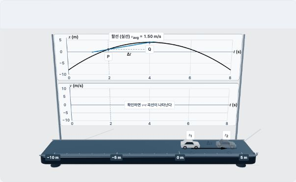
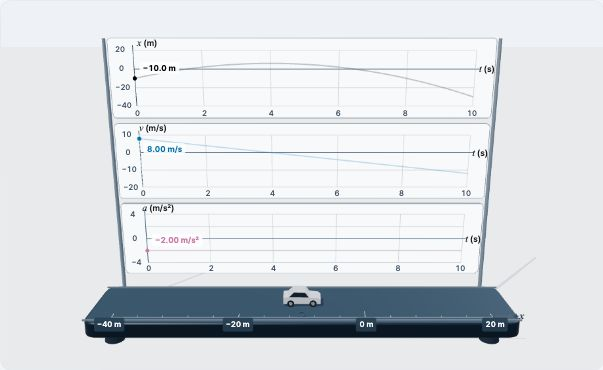
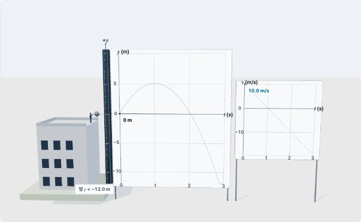
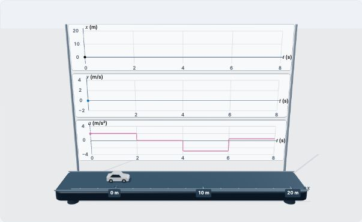
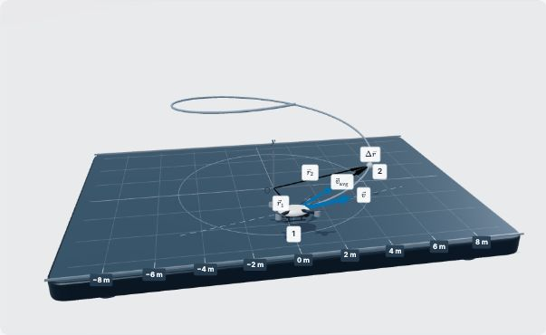
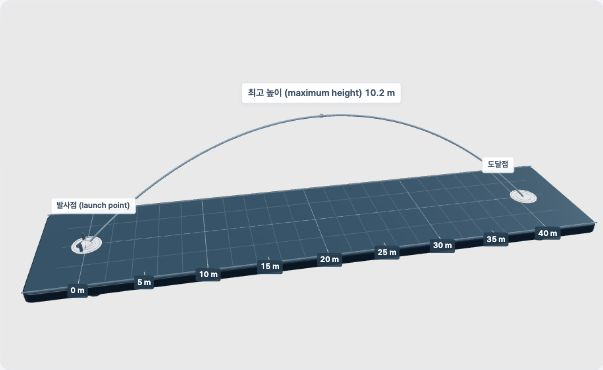
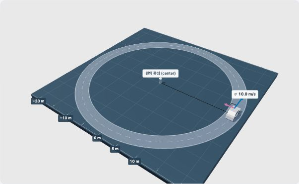
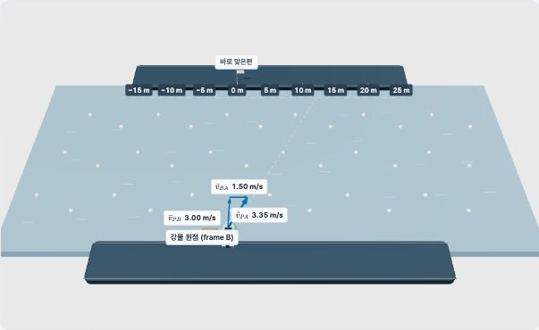

Halliday, Resnick, Walker, Principles of Physics 12판(International Adaptation)의 장과 module 순서로 정리한 3D 시뮬레이션이다. module 번호는 교재 번호와 같다.
일반물리 I 1–20장 · 화면 66개 중 13개 공개
1장 Measurement화면 1개 중 1개 공개
2장 Motion Along a Straight Line화면 4개 중 4개 공개

순간 속도와 가속도
평균과 순간 · 기울기 읽기 · 속력 변화
Position, Displacement, and Average Velocity · Instantaneous Velocity and Speed · Acceleration

등가속도 운동
그래프 연동 · 빠진 양 · 두 자동차
Constant Acceleration

자유 낙하 가속도
던지고 보기 · 최고점 예측 · 대칭
Free-Fall Acceleration

그래프 적분
속도 변화 · 변위 · 정지선
Graphical Integration in Motion Analysis
3장 Vectors화면 2개 중 2개 공개
4장 Motion in Two and Three Dimensions화면 4개 중 4개 공개

평균·순간 속도와 가속도
평균 속도 · 평균 가속도 · 방향 예측
Average Velocity and Instantaneous Velocity · Average Acceleration and Instantaneous Acceleration

포물체 운동
포물체 궤적, 수평·수직 운동의 독립
Projectile Motion

등속 원운동
벡터 보기 · 방향 예측 · 크기 예측
Uniform Circular Motion

강을 건너는 배의 상대 운동
속도 더하기 · 도착 예측 · 방향 맞추기
Relative Motion in One Dimension · Relative Motion in Two Dimensions
5장 Force and Motion–I화면 2개 중 2개 공개
6장 Force and Motion–II화면 3개 준비 중
- 6.1정지·운동 마찰, 빗면 임계각
- 6.2속력 제곱에 비례하는 항력과 종단 속력
- 6.3원운동의 구심력(경사진 커브, 연직 원)
7장 Kinetic Energy and Work화면 3개 준비 중
- 7.2일–운동에너지 정리
- 7.4, 7.5F–x 그래프 넓이로 구하는 일
- 7.6일률 P = F·v
8장 Potential Energy and Conservation of Energy화면 3개 준비 중
- 8.2트랙과 진자의 K↔U 변환
- 8.3반환점, 안정·불안정 평형
- 8.4, 8.5마찰이 만드는 열에너지 ΔE_th
9장 Center of Mass and Linear Momentum화면 5개 준비 중
- 9.1, 9.2공중에서 쪼개지는 물체의 질량중심 궤적
- 9.4F–t 넓이와 충격량
- 9.6, 9.71차원 탄성·비탄성 충돌
- 9.82차원 충돌 산란각
- 9.9로켓 속도 v_f − v_i = v_rel ln(M_i/M_f)
10장 Rotation화면 3개 준비 중
- 10.2, 10.3등각가속도 회전, v = ωr, a_r = ω²r
- 10.5모양별 관성모멘트, 평행축 정리
- 10.6, 10.7돌림힘과 각가속도(도르래에 감긴 줄과 매달린 물체)
11장 Rolling, Torque, and Angular Momentum화면 5개 준비 중
- 11.1구르는 바퀴 위 점의 속도(병진과 회전의 합)
- 11.2빗면 굴림 경주
- 11.3요요의 가속도와 장력
- 11.8회전 원판 위 질량 이동과 각운동량 보존
- 11.9자이로스코프 세차
12장 Equilibrium and Elasticity화면 2개 준비 중
- 12.2벽에 기댄 사다리
- 12.3응력–변형률, 영률
13장 Gravitation화면 3개 준비 중
- 13.2여러 질량이 만드는 중력장
- 13.4지구 관통 터널 속 운동
- 13.6, 13.7케플러 법칙, 궤도 에너지와 탈출
14장 Fluids화면 3개 준비 중
- 14.2, 14.3, 14.4깊이에 따른 압력, 파스칼 원리
- 14.5부력과 잠기는 비율
- 14.6, 14.7연속 방정식과 베르누이 방정식
15장 Oscillations화면 4개 준비 중
- 15.1, 15.2용수철 SHM과 에너지
- 15.4진자 주기(작은 각 근사와 큰 진폭 비교), SHM과 등속 원운동의 대응
- 15.5감쇠 진동
- 15.6구동 진동수에 따른 진폭과 공명 곡선
16장 Waves–I화면 3개 준비 중
- 16.1, 16.2진행파 y = y_m sin(kx − ωt), 줄의 파동 속력
- 16.5, 16.6두 파의 위상차와 간섭, phasor 합
- 16.7양 끝 고정 줄의 정상파
17장 Waves–II화면 5개 준비 중
- 17.1, 17.2음파의 변위와 압력 변화(종파의 입자 운동)
- 17.3두 음원의 경로차 간섭
- 17.5열린관·닫힌관 정상파
- 17.6맥놀이
- 17.7, 17.8도플러 효과와 충격파
18장 Temperature, Heat, and the First Law of Thermodynamics화면 4개 준비 중
- 18.3선팽창과 부피 팽창
- 18.4비열, 상변화 가열 곡선, 열평형 온도
- 18.5p–V 과정별 W, Q, ΔE_int
- 18.6판 전도와 복사
19장 The Kinetic Theory of Gases화면 4개 준비 중
- 19.3, 19.4분자 충돌로 생기는 압력과 온도
- 19.5평균 자유 경로
- 19.6Maxwell 속력 분포
- 19.7, 19.8, 19.9자유도와 몰비열, 단열 팽창
20장 Entropy and the Second Law of Thermodynamics화면 3개 준비 중
- 20.1자유 팽창과 등온 팽창의 엔트로피 변화
- 20.2, 20.3카르노 기관과 냉동기
- 20.4상자 속 분자 배치 수와 엔트로피
일반물리 II 21–41장 · 화면 60개 중 0개 공개
21장 Coulomb's Law화면 1개 준비 중
- 21.1점전하 사이 힘과 중첩
22장 Electric Fields화면 3개 준비 중
- 22.1, 22.2, 22.3점전하·쌍극자 전기장선
- 22.4, 22.5선전하·원판 전기장을 조각 합으로 적분
- 22.6, 22.7균일 장 속 전하 궤적, 쌍극자 돌림힘
23장 Gauss' Law화면 2개 준비 중
- 23.1, 23.2닫힌 면의 선속과 내부 전하
- 23.4, 23.5, 23.6대칭 분포의 E(r)
24장 Electric Potential화면 3개 준비 중
- 24.2, 24.3등전위선과 전기장선
- 24.6E = −∇V
- 24.7전하 배치의 퍼텐셜에너지
25장 Capacitance화면 2개 준비 중
- 25.2, 25.3평행판 C = ε₀A/d, 직렬·병렬 연결
- 25.4, 25.5저장 에너지, 유전체 삽입
26장 Current and Resistance화면 2개 준비 중
- 26.2drift speed와 전류밀도
- 26.3, 26.4비저항과 I–V 특성
27장 Circuits화면 2개 준비 중
- 27.1, 27.2내부 저항 있는 회로, Kirchhoff 법칙
- 27.4충전·방전, τ = RC
28장 Magnetic Fields화면 5개 준비 중
- 28.1운동하는 전하가 받는 자기력 F = qv × B
- 28.2crossed fields 속 전자 편향
- 28.3Hall 전압
- 28.4, 28.5원운동·나선 운동, cyclotron
- 28.7전류 고리의 돌림힘
29장 Magnetic Fields Due to Currents화면 2개 준비 중
- 29.1, 29.2Biot–Savart 법칙, 평행 전류 사이 힘
- 29.3, 29.4Ampere 법칙, 솔레노이드 내부 자기장
30장 Induction and Inductance화면 3개 준비 중
- 30.1, 30.2자석과 코일, 레일 위 막대
- 30.6전류 증가·감소, τ = L/R
- 30.9두 코일의 상호 유도
31장 Electromagnetic Oscillations and Alternating Current화면 3개 준비 중
- 31.1, 31.2전기·자기 에너지 교환과 감쇠
- 31.3, 31.4, 31.5교류 phasor, 공명, 역률
- 31.6변압기
32장 Maxwell's Equations – Magnetism of Matter화면 2개 준비 중
- 32.2, 32.3충전 중 축전기의 변위 전류와 유도 자기장
- 32.8hysteresis 곡선
33장 Electromagnetic Waves화면 3개 준비 중
- 33.1E와 B의 진행
- 33.4Malus 법칙
- 33.5, 33.6, 33.7Snell 법칙, 전반사, Brewster 각
34장 Images화면 3개 준비 중
- 34.2구면 거울 광선 추적
- 34.4얇은 렌즈 광선 추적
- 34.5두 렌즈 조합(현미경, 망원경)
35장 Interference화면 3개 준비 중
- 35.2, 35.3이중 슬릿 세기 분포
- 35.4얇은 막 간섭
- 35.5Michelson 간섭계
36장 Diffraction화면 4개 준비 중
- 36.1, 36.2단일 슬릿 회절 세기
- 36.3Rayleigh 기준
- 36.4, 36.5회절 포락선 안의 간섭, 회절격자
- 36.7Bragg 법칙
37장 Relativity화면 3개 준비 중
- 37.1빛 시계의 시간 지연
- 37.2, 37.3길이 수축, 시공간 도표
- 37.4, 37.5, 37.6속도 덧셈, 빛의 도플러 효과, 상대론적 에너지
38장 Photons and Matter Waves화면 5개 준비 중
- 38.2정지 전압과 진동수
- 38.3Compton 산란
- 38.5de Broglie 파장과 전자 간섭
- 38.7파동 묶음의 폭
- 38.8, 38.9계단 반사와 장벽 투과
39장 More About Matter Waves화면 3개 준비 중
- 39.1, 39.2무한 우물의 준위와 파동함수
- 39.3유한 우물
- 39.5수소 원자 준위, 전이, 스펙트럼 계열
40장 All About Atoms화면 4개 준비 중
- 40.2스핀에 따른 빔 분리
- 40.4, 40.5배타 원리와 준위 채우기
- 40.6X선 스펙트럼, Moseley 그림
- 40.7population inversion
41장 Conduction of Electricity in Solids화면 2개 준비 중
- 41.1에너지 띠와 Fermi–Dirac 점유
- 41.2, 41.3도핑과 p–n 접합